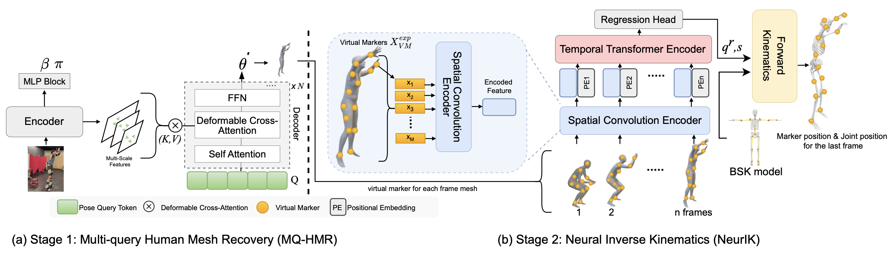
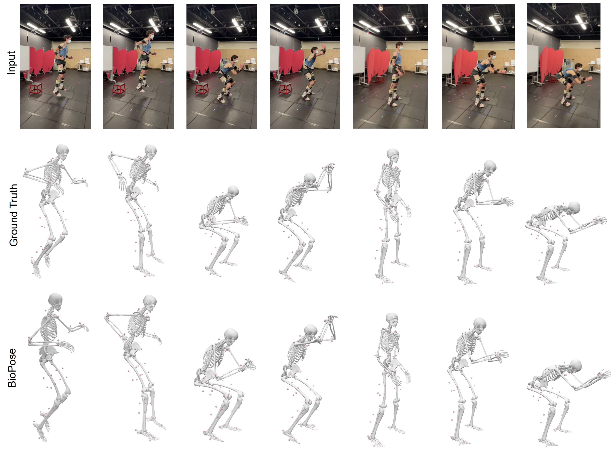

BioPose: Biomechanically-accurate 3D Pose Estimation from Monocular Videos
(WACV 2025)
Farnoosh Koleini *, Muhammad Usama Saleem *, Pu Wang, Hongfei Xue, Ahmed Helmy, Abbey Fenwick
For any inquiries, please email to: msaleem2@charlotte.edu
Abstract
Recent advancements in 3D human pose estimation from single-camera images and videos have relied on parametric models, like SMPL. However, these models oversimplify anatomical structures, limiting their accuracy in capturing true joint locations and movements, which reduces their applicability in biomechanics, healthcare, and robotics. Biomechanically accurate pose estimation, on the other hand, typically requires costly marker-based motion capture systems and optimization techniques in specialized labs. To bridge this gap, we propose BioPose, a novel learning-based framework for predicting biomechanically accurate 3D human pose directly from monocular videos. BioPose includes three key components: a Multi-Query Human Mesh Recovery model (MQ-HMR), a Neural Inverse Kinematics (NeurIK) model, and a 2D-informed pose refinement technique. MQ-HMR leverages a multi-query deformable transformer to extract multi-scale fine-grained image features, enabling precise human mesh recovery. NeurIK treats the mesh vertices as virtual markers, applying a spatial-temporal network to regress biomechanically accurate 3D poses under anatomical constraints. To further improve 3D pose estimations, a 2D-informed refinement step optimizes the query tokens during inference by aligning the 3D structure with 2D pose observations. Experiments on benchmark datasets demonstrate that BioPose significantly outperforms state-of-the-art methods.
Video Demos of BioPose
Pitching
Jumping
Squats
Video Demos of MQ-HMR
The MQ-HMR demo highlights our method for achieving accurate 3D human mesh reconstructions from monocular images. Key to our approach is the use of a Multi-Query Deformable Transformer, which leverages multi-scale feature maps and deformable attention mechanisms to enhance pose recovery, even in complex and ambiguous scenarios. By efficiently handling uncertainty in the 2D-to-3D mapping process, MQ-HMR delivers precise and anatomically consistent 3D reconstructions.
Tennis
Ice Skating
Football
Dance
Ski
Skate Board
War
Long Jump
Soccer
Basketball
BioPose Overall Framework
Overview of BioPose, comprising two key components: (1) the MQ-HMR model, which leverages a multi-query deformable transformer decoder to extract multi-scale image features from a vision transformer, enabling precise 3D mesh recovery, and (2) the NeurIK model, which uses the mesh vertices as virtual markers and applies a spatio-temporal network to infer biomechanically accurate 3D poses while maintaining anatomical constraints.
State-of-the-Art Comparison of MQHMR
Comparison of state-of-the-art methods, HMR2.0 and TokenHMR, which use vision transformers for 3D human mesh recovery from a single image. Red circles highlight errors in these methods when dealing with complex or ambiguous poses. In contrast, our MQ-HMR method addresses these challenges by incorporating a multi-query deformable transformer, leveraging multi-scale feature maps and a deformable attention mechanism to deliver more accurate and anatomically consistent pose estimations, even in difficult scenarios.

State-of-the-Art Comparison of NeurIK
Qualitative results of our proposed method BioPose and comparison with ground truth. These pictures include multiple actions such as squatting and drop jumps.
Qualitative Results on Challenging Poses
Qualitative results of BioPose showcasing its effectiveness in handling challenging poses from the LSP dataset. These results highlight BioPose's ability to achieve accurate 3D pose estimations, even in scenarios with occlusions or complex body orientations.